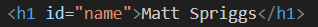
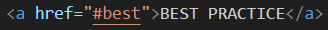
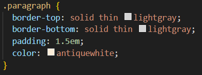
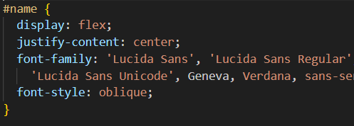

SIMLAR BUT DIFFERENT
A
class
and an
id
provide similar functions but are critically different. They both
connect HTML to CSS that styles it and/or JavaScript that powers its
interactivity. However there is a key difference and there are best
practices for when to use a class or an id.
MAIN FUNCTION
Assigning a
class
or an
id
to an HTML element/tag (a part of the page) allows you to apply specific
CSS or JavaScript effects between the opening and closing element/tag.
CRITICAL DIFFERENCES
A class differs from an id in that it can be repeated anywhere in that
HTML document/page by simply adding the class to the opening
element/tag. However an id is unique and is scoped "globally" for that
HTML document/page. In simple terms, you can repeat a class within an
HTML document/page but an id can only appear once within an HTML
document/page.
This unique id also provides an additional function for HTML. If you
want to provide naviagation links to specific part of a page, you can
use the unique id as the target for that link!
Additionally, you could, if necessary, provide an element/tag with BOTH
an id and a class. This should be rare and will only happen in very
specific use cases.
HTML Code Example
To assign a class and/or an id in HTML find the "opening" element/tag
you want it to apply to and add the class and/or an id. This allows CSS
or JavaScript to find it on the HTML page and apply the effect to the
page that the end user views or interacts with. To apply a class in HTML
the code would look something like this:

To use the id for naviagating within a page you supply the id to the
anchor (link) element/tag as its href (reference). That code would look
like this:

CSS Code Example
CSS will then "look" for the class and/or id to apply the styling. For
CSS to find a class and/or id in the HTML document the code would look
something like this:
CSS CLASS

CSS ID

BEST PRACTICE
To be effective using class and id in website development, one has to be
able to look at their site as a whole. While it is possible to repeat an
id in separate HTML documents, ids can also conflict with JavaScript
functions. It is a best practice to make ids globally unique to the
entire site and not just the HTML document. This may not be practical
for very large sites, so having strong documentation of the unique ids
used on the site is critically important so that ids can be reused in
separate HTML documents for CSS styling purposes and not create
JavaScript conflicts.
To determine if you should use a class or an id answer several
questions:
HTML
Q: Is this the only time this element will appear on the
page?
If the answer is yes then an id will be appropriate.
Q: Will I need to provide a navigation link to this part of
the page?
If the answer is yes then an id will be
appropriate.
CSS
Q: Do I need to repeat this styling elsewhere?
If the answer is yes then a class will be appropriate.
Q: Is this the only time this will appear on a page?
If the answer is yes then an id will be appropriate.
JS
Q: Will JavaScript be the only thing using this id to
manipulate the HMTL document?
If the answer is yes then an
id will be appropriate.
VIDEO RESOURCE
What's the difference between IDs & Classes? HTML, CSS &
JavaScript